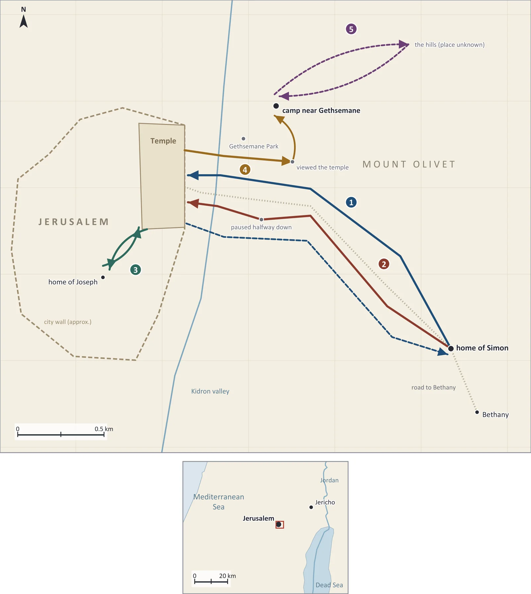
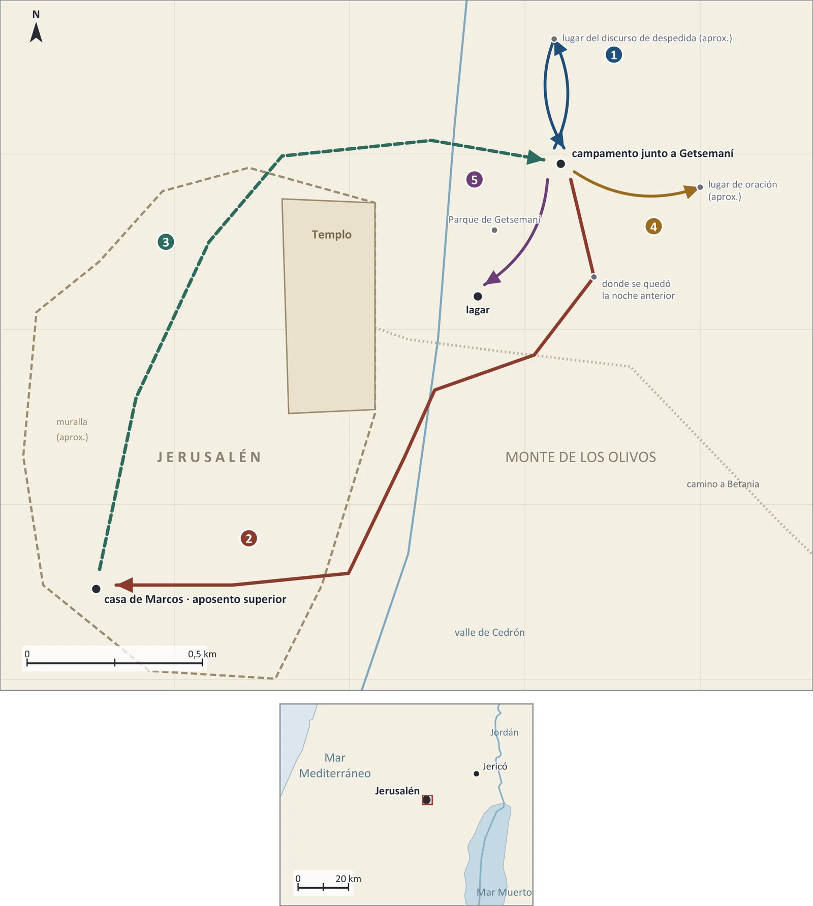
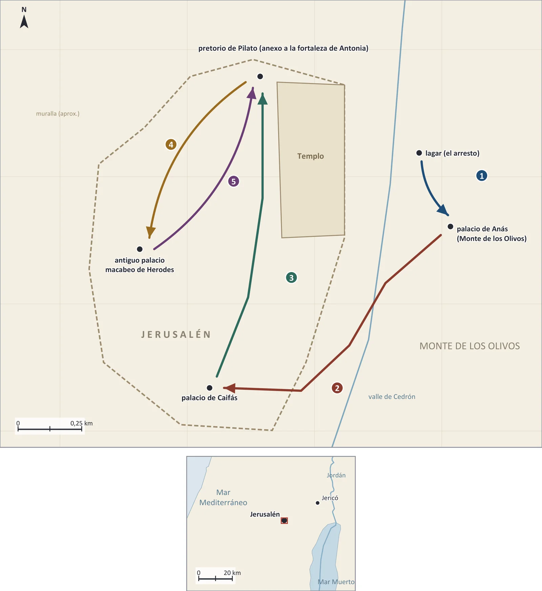
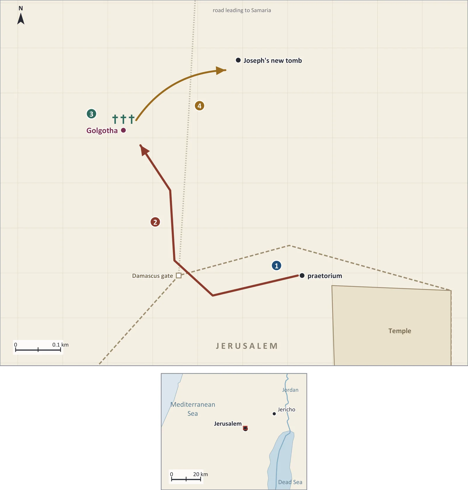

Parte VI Los acontecimientos que llevan al arresto y a la cruz
Documentos 171–188
Documento 171Camino a Jerusalénmarzo de 30 d. de J.C.
| Acontecimiento | El libro de Urantia | Biblia |
|---|---|---|
| Preparativos para partir hacia Jerusalén | 171:0.1–7 | Mt 20:20-28; Mr 10:35-45 |
| El día siguiente al sermón sobre el reino, Jesús anunció que subiría a la Pascua de Jerusalén pasando por el sur de Perea, y sus seguidores supusieron que establecería el reino temporal. Ese domingo por la tarde, la petición de Salomé en favor de sus hijos indignó a los apóstoles, y Jesús enseñó que el que quiera ser grande debe ser servidor. | ||
| La petición de Salomé y de los hijos de Zebedeo | 171:0.4–7 | Mt 20:20-28; Mr 10:35-45 |
| El domingo por la tarde en Pella, Salomé vino con sus hijos Santiago y Juan y pidió que se sentaran a la derecha y a la izquierda de Jesús en el reino que iba a establecer en Jerusalén. Jesús dijo que tales puestos le corresponde al Padre decidirlos y enseñó a los diez sobre el servicio. Esa noche, gracias a los esfuerzos de Pedro, los dos hermanos pidieron disculpas.Difiere de la BibliaMateo dice que fue la madre quien pidió y Marcos que fueron los hijos, mientras que en El libro de Urantia Salomé viene con sus hijos a pedirlo. El dicho del rescate no aparece, y se añaden las disculpas por mediación de Pedro. | ||
| 1. La Partida de Pella | 171:1.1–6 | Ninguno |
| En la mañana del lunes 13 de marzo, Jesús y los doce se despidieron definitivamente del campamento de Pella y se dirigieron al sur de Perea, seguidos por unos mil discípulos. El miércoles 15 de marzo, siguiendo las instrucciones de Andrés, David Zebedeo cerró el campamento de visitantes, vendió su equipo y más tarde entregó el dinero a Judas Iscariote. | ||
| 2. Sobre Cómo Calcular el Gasto | 171:2.1–6 | Lc 14:25-35 |
| En el vado de Betania sobre el Jordán, los discípulos vacilaron al enterarse de que Jesús no iba directamente a Jerusalén. Jesús se subió a una enorme piedra y pronunció el discurso sobre «el calcular el gasto», citando al hombre que construye una torre y al rey que va a la guerra, y pidió una consagración que llegara incluso a la vida misma. Unos quinientos lo siguieron entonces hacia Hesbón.Difiere de la BibliaEl Evangelio de Lucas dice que hay que aborrecer al padre, a la madre, a la mujer, a los hijos y aun la propia vida, mientras que El libro de Urantia dice que hay que estar dispuesto a abandonarlos, y sitúa el discurso sobre una enorme piedra en el vado del Jordán. | ||
| 3. La Gira en PereaMapa 32-③ Gira por el sur de Perea | 171:3.1–5 | Ninguno |
| Durante más de dos semanas Jesús y los doce visitaron las ciudades del sur de Perea donde trabajaban los setenta. En Hesbón Jesús vio a Abner por última vez y le dijo que continuara la obra. Aunque los apóstoles sabían que el sanedrín había condenado a Jesús, la resurrección de Lázaro los dejó en una serena expectativa más que en el temor. | ||
| 4. La Enseñanza en Livias | 171:4.1–9 | Mt 20:17-19; Mr 10:32-34; Lc 13:31-35; 18:31-34 |
| El miércoles 29 de marzo por la noche, en el campamento de Livias, Simón el Zelote y Simón Pedro recibieron más de cien espadas y las distribuyeron. A la mañana siguiente Jesús predijo de nuevo su muerte y su resurrección al tercer día, respondió a la advertencia sobre Herodes y partió hacia Jerusalén por el camino de Jericó. | ||
| En Livias Jesús predice de nuevo su muerte | 171:4.2–3 | Mt 20:17-19; Mr 10:32-34; Lc 18:31-34 |
| Temprano el jueves por la mañana en Livias, Jesús hizo que Andrés despertara a los apóstoles y les advirtió que no confiaran en las defensas de la carne. Dijo que el Hijo del Hombre sería entregado a los principales sacerdotes y a los gentiles, escarnecido y muerto, pero que resucitaría al tercer día. Cegados por la esperanza de un reino temporal, no quisieron tomar sus palabras al pie de la letra.Difiere de la BibliaLos Evangelios sitúan este episodio en el camino de subida a Jerusalén, mientras que El libro de Urantia lo sitúa en Livias, la mañana siguiente a la distribución de las espadas, y dice que los apóstoles tomaron el tercer día como una manera de hablar que significaba un tiempo breve. | ||
| La advertencia sobre Herodes y la respuesta de Jesús | 171:4.4–7 | Lc 13:31-35 |
| En Livias, justo después del desayuno, unos fariseos amistosos advirtieron a Jesús que huyera porque Herodes quería matarlo. Jesús les dijo que dijeran a esa zorra que el Hijo del Hombre predicaría hoy en Perea e iría mañana a Judea, se lamentó por Jerusalén, que mata a los profetas, y dijo que subirían a la Pascua.Difiere de la BibliaEl Evangelio de Lucas no nombra ningún lugar, mientras que El libro de Urantia lo sitúa en Livias y explica que Herodes quería en realidad expulsar a Jesús de sus dominios más que matarlo; echar fuera demonios y sanar se convierte en predicar. | ||
| 5. El Ciego en JericóMapa 32-④ Por Jericó a Betania | 171:5.1–3 | Mt 20:29-34; Mr 10:46-52; Lc 18:35-43 |
| Tarde el jueves 30 de marzo, cuando Jesús y unos doscientos seguidores se acercaban a la puerta de Jericó, el anciano mendigo Bartimeo, ciego desde su juventud, le gritó. Cuando lo reprendieron, gritó más fuerte, y Jesús lo llamó y, viendo su fe, le devolvió la vista. Bartimeo se quedó cerca de Jesús hasta que éste partió al día siguiente.Difiere de la BibliaEl Evangelio de Mateo habla de dos ciegos cuando Jesús salía de Jericó, mientras que El libro de Urantia habla sólo de Bartimeo cuando Jesús entraba en la ciudad, y añade que éste había resuelto buscar la curación después de oír de la curación del ciego Josías en Jerusalén. | ||
| 6. La Visita a Zaqueo | 171:6.1–4 | Lc 19:1-10 |
| Al entrar en Jericó cerca de la puesta del sol, Jesús llamó a Zaqueo, el jefe de los publicanos, de baja estatura, que se había subido a un sicómoro, y le dijo que se quedaría en su casa. Cuando un fariseo protestó, Zaqueo prometió dar la mitad de sus bienes a los pobres y devolver cuatro veces lo que hubiera tomado injustamente, y Jesús declaró que la salvación había llegado a esta casa.Difiere de la BibliaEl Evangelio de Lucas dice que Zaqueo habló al Señor, mientras que El libro de Urantia dice que se subió a una silla y lo declaró públicamente ante la gente de Jericó, y que Jesús dijo que se había convertido verdaderamente en un hijo de Abraham. | ||
| 7. «Al Pasar Jesús» | 171:7.1–10 | Ninguno |
| Jesús difundía el buen ánimo dondequiera que iba y nunca se apresuraba, consolando y ayudando a la gente al pasar. Como comprendía y amaba verdaderamente a los hombres, mostraba una compasión auténtica, y la mayor parte de su obra importante sucedió de manera incidental, a lo largo del camino. Sus seguidores deben aprender igualmente a hacer el bien en el curso de la vida diaria. | ||
| 8. La Parábola de las Minas | 171:8.1–15 | Lc 19:11-28 |
| Al salir de Jericó cerca del mediodía, Jesús se detuvo para almorzar a mitad del camino a Betania y contó a los apóstoles la parábola de las minas. Basada en la experiencia de Arquelao, hablaba de un noble rechazado que confió una mina a cada uno de doce siervos y les pidió cuentas a su regreso. Natanael enseñó más tarde su significado en cuatro puntos.Difiere de la BibliaEl Evangelio de Lucas habla de diez siervos y termina con la matanza de los enemigos del noble, mientras que El libro de Urantia da las minas a doce siervos, los apóstoles, basa la historia en Arquelao y omite la ejecución de los enemigos. | ||
Documento 172La Entrada a Jerusalénmarzo – abril de 30 d. de J.C.
| Acontecimiento | El libro de Urantia | Biblia |
|---|---|---|
| (Introducción) | 172:0.1–3 | Ninguno |
| Poco después de las cuatro de la tarde del viernes 31 de marzo del año 30 d. de J.C., Jesús y los apóstoles llegaron a Betania, y Jesús se alojó en casa de Simón, un creyente del vecindario. Los altos sacerdotes decidieron no apresarlo en medio de sus amigos, sino esperar a que entrara en Jerusalén. Esa noche los apóstoles, armados con espadas, lo custodiaron por parejas. | ||
| 1. El Sábado en Betania | 172:1.1–9 | Mt 26:6-13; Mr 14:3-9; Jn 11:55; 12:1-11 |
| En la noche del sábado, seis días antes de la Pascua, la gente de Betania y Betfagé ofreció un banquete en casa de Simón en honor de Jesús y de Lázaro. María derramó ungüento de espicanardo sobre la cabeza y los pies de Jesús; Judas lo llamó un derroche, pero Jesús la defendió diciendo que lo preparaba para su sepultura. Judas resolvió vengarse de esta reprensión.Difiere de la BibliaMateo y Marcos sitúan la escena en casa de Simón el leproso, donde una mujer le unge la cabeza, mientras que El libro de Urantia dice que María le ungió la cabeza y los pies en la casa de Simón, el creyente del vecindario. A diferencia de Juan, no llama ladrón a Judas. | ||
| 2. Domingo por la Mañana con los Apóstoles | 172:2.1–5 | Ninguno |
| El domingo por la mañana, en el jardín de Simón, Jesús dio a los doce las últimas instrucciones antes de entrar en Jerusalén: no debían realizar ninguna obra pública durante la Pascua, y debían permanecer cerca de él para velar y orar. Luego aconsejó a Lázaro que no perdiera la vida a causa de la venganza del sanedrín. | ||
| 3. La Partida a JerusalénMapa 32-⑤ Entrada en Jerusalén, 2 de abril (recuadro) | 172:3.1–16 | Mt 21:1-11; Mr 11:1-10; Lc 19:29-44; Jn 12:12-19 |
| A la una y media de la tarde del domingo, Jesús hizo su entrada pública en Jerusalén montado en un pollino, de acuerdo con las palabras de Zacarías. Pedro y Juan trajeron el pollino desde Betfagé, y las multitudes tendieron sus mantos y ramas, gritando hosanna. Desde la cima del Monte de los Olivos, Jesús lloró sobre Jerusalén, y miles de personas salieron de la ciudad a recibirlo.Difiere de la BibliaLos Evangelios dicen que fueron enviados dos discípulos sin nombre, y Mateo menciona una asna y un pollino, mientras que El libro de Urantia dice que Pedro y Juan trajeron sólo el pollino y que la multitud que lo recibió se debió a que David Zebedeo había difundido la noticia. | ||
| 4. La Visita al Templo | 172:4.1–3 | Mr 12:41-44; Lc 21:1-4 |
| Mientras los gemelos Alfeo devolvían el pollino, Jesús y los diez apóstoles recorrieron el templo observando los preparativos de la Pascua. Hacia el anochecer, junto al tesoro, Jesús vio a una viuda pobre echar dos blancas y dijo que ella había dado más que todos los demás, porque dio todo su sustento. Luego volvieron a Betania a descansar.Difiere de la BibliaMarcos y Lucas sitúan la ofrenda de la viuda unos días más tarde, mientras Jesús enseñaba en el templo, mientras que El libro de Urantia la sitúa en la tarde del domingo de la entrada, cuando recorrían el templo. | ||
| 5. La Actitud de los Apóstoles | 172:5.1–13 | Ninguno |
| Al regresar a Betania el domingo por la noche, los apóstoles guardaban silencio. Pedro y Santiago estaban decepcionados de que Jesús no hubiera proclamado el reino; Juan y Mateo recordaban la profecía de Zacarías; Natanael y Tomás veían en la entrada un medio para impedir su arresto. Judas, herido por las burlas de un amigo saduceo, ya era un desertor en su corazón. | ||
Documento 173El Lunes en Jerusalénabril de 30 d. de J.C.
| Acontecimiento | El libro de Urantia | Biblia |
|---|---|---|
| Mapa 33De Betania al templo y al campamento de Getsemaní3–5 de abril de 30 d. de J.C. | ||
| (Introducción)Mapa 33-① Lunes 3 de abril · de Betania al templo | 173:0.1–3 | Ninguno |
| Temprano el lunes por la mañana, Jesús y los apóstoles se reunieron en casa de Simón en Betania y partieron hacia Jerusalén. Los apóstoles guardaban silencio a causa de su instrucción de no enseñar en público durante la semana de Pascua, y Judas pensaba en cómo retirarse. Hacia las nueve, Jesús subió a una plataforma en el gran patio del templo y comenzó a enseñar. | ||
| 1. La Limpieza del Templo | 173:1.1–11 | Mt 21:12-17; Mr 11:15-19; Lc 19:45-48; Jn 2:13-17 |
| La venta de animales para los sacrificios y el cambio de dinero en los patios del templo producían enormes ganancias a la familia del sumo sacerdote. El lunes por la mañana Jesús tomó un látigo de cuerdas de manos de un muchacho y echó fuera a los animales, los peregrinos volcaron las mesas de los cambistas, y en cinco minutos el comercio quedó barrido. El patio permaneció tranquilo mientras Jesús enseñaba todo el día.Difiere de la BibliaEl Evangelio de Juan sitúa la purificación al comienzo del ministerio, mientras que El libro de Urantia la sitúa el lunes de la última semana; y mientras los Evangelios dicen que Jesús volcó las mesas, El libro de Urantia dice que lo hicieron los peregrinos. | ||
| 2. El Desafío a la Autoridad del Maestro | 173:2.1–8 | Mt 21:23-27; Mr 11:27-33; Lc 20:1-8 |
| En su reunión del mediodía, el sanedrín resolvió destruir a Jesús y designó cinco grupos para tenderle trampas. Hacia las dos, los ancianos de Israel le preguntaron con qué autoridad hacía estas cosas. Jesús les preguntó si el bautismo de Juan era del cielo o de los hombres, y cuando ellos dijeron que no lo sabían, él se negó a responder.Difiere de la BibliaLos Evangelios dicen que preguntaron los principales sacerdotes, los escribas y los ancianos, mientras que El libro de Urantia dice que fue el grupo de los ancianos, uno de los cinco designados por el sanedrín, y explica que Jesús no basó su autoridad en Juan. | ||
| 3. La Parábola de los Dos Hijos | 173:3.1–4 | Mt 21:28-32 |
| A los fariseos silenciosos Jesús les habló de dos hijos. Uno se negó a trabajar en la viña, pero después se arrepintió y fue; el hijo mayor prometió ir, pero no fue. El primero hizo la voluntad del padre, dijo, y los publicanos y las rameras entrarían en el reino antes que ellos. Los apóstoles no tomaron parte en estos diálogos.Difiere de la BibliaEn Mateo el hijo mayor dice que irá y no va, y el segundo se arrepiente y va; El libro de Urantia invierte el orden, de modo que el hijo a quien se pide primero se niega y luego va, y el hijo mayor no va. | ||
| 4. La Parábola del Amo Ausente | 173:4.1–5 | Mt 21:33-46; Mr 12:1-12; Lc 20:9-19 |
| Jesús habló a la multitud de un propietario que arrendó su viña a unos labradores y se fue a un país lejano. Los labradores mataron a sus siervos y a su mayordomo, y por último a su hijo. Citando la piedra que desecharon los constructores y que llegó a ser la piedra angular, advirtió que el reino sería quitado a quienes lo rechazan. Esa noche los saduceos y los fariseos unieron sus fuerzas.Difiere de la BibliaLos Evangelios envían al hijo inmediatamente después de los siervos, mientras que El libro de Urantia añade la etapa en que se envía y se mata al mayordomo, el siervo de más confianza. El dicho de que quien caiga sobre la piedra, aunque quebrantado, será salvado, no se encuentra en la Biblia. | ||
| 5. La Parábola del Festín de Boda | 173:5.1–6 | Mt 22:1-14 |
| Jesús habló de un rey cuyos invitados rechazaron el banquete de bodas de su hijo y mataron a sus mensajeros; el rey los destruyó e hizo llamar a todos los que encontraran en los caminos. Un invitado que no quiso ponerse el traje de bodas, proporcionado gratuitamente, fue echado fuera. Hacia las cuatro, de regreso a Betania, Jesús dispuso que se instalara un campamento cerca de Getsemaní.Difiere de la BibliaEl Evangelio de Mateo hace atar al hombre sin traje de bodas y echarlo a las tinieblas de afuera, añadiendo que pocos son escogidos, mientras que El libro de Urantia dice que el rey proporcionaba gratuitamente los trajes y que el hombre simplemente fue echado fuera. | ||
| «Destruid este templo, y en tres días …» | 173:5.4 | Jn 2:18-22 |
| Después de la parábola, un creyente bien dispuesto pidió una señal para saber que Jesús era el Hijo de Dios. Señalando su propio cuerpo, Jesús dijo: «Destruid este templo, y en tres días yo volveré a levantarlo». Ni el pueblo ni los apóstoles lo comprendieron, y sólo después de su resurrección recordaron estas palabras.Difiere de la BibliaEl Evangelio de Juan sitúa esto al comienzo del ministerio, después de la purificación del templo, como respuesta a los judíos que exigían una señal, con un tiempo de construcción de cuarenta y seis años, mientras que El libro de Urantia hace que responda a un creyente en la última semana y habla de casi cincuenta años. | ||
Mapa 33De Betania al templo y al campamento de Getsemaní
3–5 de abril de 30 d. de J.C. · Documentos 173–177

- ①Lunes 3 de abril · de Betania al temploTemprano por la mañana se reunieron en la casa de Simón, bajaron por el Monte de los Olivos y llegaron al templo hacia las nueve; Jesús enseñó en el gran patio, y el templo fue purificado. Hacia las cuatro regresaron a Betania (línea discontinua), y él dispuso que se estableciera un campamento más cerca de la ciudad. [173:0.1–3; 173:1; 173:5.5]
- ②Martes 4 de abril, por la mañana · de vuelta al patio del temploHacia las siete se despidió en la casa de Simón. Camino de Jerusalén con cuatro apóstoles, se detuvo más de una hora a mitad de la ladera del Monte de los Olivos y luego enseñó en el patio del templo. [174:0.1–3; 174:2.2]
- ③Mediodía · la casa de JoséRecibió a los griegos y habló durante el almuerzo; luego los condujo por las calles estrechas de vuelta al templo y, poco después de las dos, comenzó su último discurso en el templo. [174:5.2; 174:5.14; 175:0.1]
- ④Martes por la tarde · al campamento cerca de GetsemaníAl salir del templo, subieron un corto trecho por la ladera occidental del Monte de los Olivos; contemplando el templo bajo el sol poniente, Jesús habló de su destrucción, y siguieron hasta el nuevo campamento, un poco más arriba del campamento público. [176:0.1–2; 176:2.9]
- ⑤Miércoles 5 de abril · un día en las colinasUn día de descanso. Jesús pasó todo el día a solas en las colinas con Juan Marcos y regresó al campamento después de la puesta del sol. El texto no indica el lugar en las colinas. [177:0.1–4; 177:1.3–5]
Documento 174Martes por la Mañana en el Temploabril de 30 d. de J.C.
| Acontecimiento | El libro de Urantia | Biblia |
|---|---|---|
| Saludos personalesMapa 33-② Martes 4 de abril, por la mañana · de vuelta al patio del templo | 174:0.1–3 | Ninguno |
| Hacia las siete de la mañana del martes, Jesús se reunió en casa de Simón con los apóstoles, el cuerpo de mujeres y unas dos docenas de discípulos. Dio a Lázaro la instrucción que lo llevó a huir a Filadelfia y dio sus consejos de despedida al cuerpo de mujeres. Después de dirigir una palabra personal a cada uno de los doce, partió hacia Jerusalén con Andrés, Pedro, Santiago y Juan. | ||
| 1. El Perdón Divino | 174:1.1–5 | Ninguno |
| Al bajar por el Monte de los Olivos, Pedro preguntó quién tenía razón: Santiago, que decía que el Padre perdona antes de que se lo pidamos, o él mismo, que sostenía que primero viene el arrepentimiento. Jesús enseñó que Dios, como un padre sabio, comprende a sus hijos, por lo que el perdón es inevitable; el pecado es una experiencia de la conciencia de la criatura, y quienes aman a sus hermanos ya los han perdonado. | ||
| 2. Las Preguntas de los Dirigentes Judíos | 174:2.1–5 | Mt 22:15-22; Mr 12:13-17; Lc 20:20-26 |
| El lunes por la noche, unos cincuenta dirigentes acordaron desacreditar a Jesús en público. El martes por la mañana, unos jóvenes estudiantes bien aleccionados, junto con herodianos, le preguntaron si era lícito pagar tributo al césar. Jesús les hizo mostrar un denario con la imagen del césar y respondió: «Dad al césar las cosas que son del césar y dad a Dios las cosas que son de Dios».Difiere de la BibliaMateo dice que los fariseos enviaron a sus discípulos, mientras que El libro de Urantia dice que vinieron unos jóvenes estudiantes bien aleccionados, y explica la respuesta por la norma del sanedrín según la cual el derecho de acuñar moneda llevaba consigo el derecho de cobrar impuestos. | ||
| 3. Los Saduceos y la Resurrección | 174:3.1–5 | Mt 22:23-33; Mr 12:18-27; Lc 20:27-40 |
| Un grupo de saduceos preguntó de quién sería esposa en la resurrección una mujer que se había casado sucesivamente con siete hermanos. Jesús respondió que los resucitados ni se casan ni se dan en casamiento, sino que son como los ángeles, y que el Padre, el Dios de Abraham, de Isaac y de Jacob, es Dios de los vivos. Algunos fariseos exclamaron que había respondido bien.Difiere de la BibliaLos Evangelios dan sólo la respuesta, mientras que El libro de Urantia explica que Jesús citó sólo a Moisés ante unos saduceos que aceptaban únicamente los libros de Moisés, y que no respaldó la creencia de los fariseos en una resurrección literal del cuerpo. | ||
| 4. El Gran Mandamiento | 174:4.1–7 | Mt 22:34-46; Mr 12:28-37; Lc 20:41-44 |
| Un abogado de los fariseos preguntó cuál era el mandamiento más grande. Jesús señaló amar a Dios con todo el corazón, el alma, la mente y las fuerzas, y amar al prójimo como a uno mismo. Le dijo al abogado que no estaba lejos del reino, y esa noche el abogado fue bautizado. Hacia el mediodía Jesús preguntó cómo podía ser el Libertador hijo de David.Difiere de la BibliaMateo dice sólo que el abogado preguntó para ponerlo a prueba, mientras que El libro de Urantia dice que fue elogiado, profesó su fe esa noche en el campamento y fue bautizado por Josías, y hace que Jesús hable de un solo mandamiento. | ||
| 5. Los Griegos IndagadoresMapa 33-③ Mediodía · la casa de José | 174:5.1–14 | Jn 12:20-36 |
| Hacia el mediodía del martes, unos griegos creyentes de Alejandría, Atenas y Roma pidieron a Felipe ver a Jesús, y Felipe y Andrés los llevaron a un almuerzo en casa de José. Jesús habló del grano de trigo y oró: «Padre, glorifica tu nombre», y el Ajustador Personalizado apareció y respondió.Difiere de la BibliaEl Evangelio de Juan dice que vino una voz del cielo y que la multitud pensó que era un trueno o un ángel, mientras que El libro de Urantia dice que habló el Ajustador Personalizado, que los presentes no oyeron la voz, y que la escena fue un almuerzo en casa de José. | ||
Documento 175El Último Discurso en el Temploabril de 30 d. de J.C.
| Acontecimiento | El libro de Urantia | Biblia |
|---|---|---|
| (Introducción) | 175:0.1–2 | Ninguno |
| Poco después de las dos de la tarde del martes, Jesús llegó al templo con once apóstoles, José de Arimatea, los treinta griegos y algunos discípulos, y comenzó su último discurso. Los cambistas no habían vuelto, de modo que el patio estaba tranquilo. Este discurso fue su último llamamiento al pueblo judío y la acusación final contra sus dirigentes. | ||
| 1. El Discurso | 175:1.1–25 | Mt 23:1-39; Mr 12:38-40; Lc 20:45-47 |
| En los patios del templo, Jesús ofreció una última oportunidad de arrepentimiento a los dirigentes que habían rechazado la misericordia del Padre, y dijo al pueblo que siguiera las palabras de los escribas, pero no sus obras. Pronunció ayes contra los hipócritas, se lamentó de que habría querido juntarlos como la gallina junta a sus polluelos, dijo que su casa les quedaba desierta y salió del templo.Difiere de la BibliaEl Evangelio de Mateo termina diciendo que no lo verán hasta que bendigan al que viene en nombre del Señor, mientras que El libro de Urantia hace que Jesús diga que ya no enseñará más en el templo y añade que todavía ofrece misericordia. | ||
| 2. La Posición del Judío | 175:2.1–3 | Ninguno |
| El rechazo de Jesús por parte de los dirigentes judíos y su complot para darle muerte no afectan en modo alguno la situación de ningún judío individual ante Dios. Jesús mismo era judío, y los primeros mártires del evangelio fueron judíos; los reveladores advierten que la persecución de los judíos por parte de supuestos cristianos jamás puede justificarse. | ||
| 3. La Fatídica Reunión del Sanedrín | 175:3.1–3 | Ninguno |
| A las ocho de la noche del martes se reunió el sanedrín, y poco antes de la medianoche del 4 de abril del año 30 d. de J.C. votó por unanimidad imponer la sentencia de muerte tanto a Jesús como a Lázaro. Esto marcó el rechazo del pacto divino. Se ordenó a los oficiales que arrestaran a Jesús en secreto, no en público, y que lo trajeran antes de la medianoche del jueves. | ||
| 4. La Situación en Jerusalén | 175:4.1–15 | Ninguno |
| Judas se perdió la primera mitad del discurso mientras deliberaba con unos parientes saduceos acerca de desertar, y la denuncia confirmó su decisión de abandonar el evangelio. Esa noche, más de treinta creyentes secretos se reunieron en casa de Nicodemo y acordaron reconocer abiertamente al Maestro en el momento en que fuera arrestado. El sanedrín fijó su próxima reunión en casa de Caifás. | ||
Documento 176El Anochecer del Martes en el Monte de los Olivosabril de 30 d. de J.C.
| Acontecimiento | El libro de Urantia | Biblia |
|---|---|---|
| La destrucción del templo, predichaMapa 33-④ Martes por la tarde · al campamento cerca de Getsemaní | 176:0.1–2 | Mt 24:1-2; Mr 13:1-2; Lc 21:5-6 |
| Al salir del templo el martes por la tarde, Mateo señaló sus enormes piedras y sus adornos, y Jesús dijo que no quedaría piedra sobre piedra. El grupo subió al Monte de los Olivos y se sentó a contemplar el templo resplandeciente bajo la puesta del sol y la luna llena, y Natanael preguntó cómo sabrían cuándo sucederían estas cosas.Difiere de la BibliaLos Evangelios dicen que señalaron los edificios los discípulos, uno de ellos o algunas personas, mientras que El libro de Urantia nombra a Mateo y dice que fue Natanael quien preguntó por el momento. | ||
| 1. La Destrucción de Jerusalén | 176:1.1–7 | Mt 24:3-28; Mr 13:3-23; Lc 21:7-24 |
| En el Monte de los Olivos, Jesús les dijo que no temieran a los falsos libertadores, las guerras ni la persecución, y que huyeran a las colinas cuando los ejércitos romanos rodearan Jerusalén. Atendiendo a esta advertencia, los creyentes huyeron a Pella en cuanto aparecieron los ejércitos romanos. Cuando Pedro preguntó por su regreso, Jesús lo reprendió por tratar de unir la nueva enseñanza a la antigua.Difiere de la BibliaLos Evangelios vinculan estas palabras con las señales del fin del mundo, la segunda venida y la abominación desoladora, mientras que El libro de Urantia las trata como instrucciones prácticas para huir de la destrucción de Jerusalén y añade que los creyentes escaparon a Pella. | ||
| 2. El Segundo Advenimiento del Maestro | 176:2.1–9 | Mt 24:29-44; Mr 13:24-37; Lc 21:25-36 |
| Jesús descartó la expectativa de que el Hijo del Hombre se sentaría en el trono de David, prometiendo estar con ellos por medio del Espíritu de la Verdad y regresar algún día a este mundo. El momento sólo se conoce en los concilios del Paraíso, y cada persona afronta individualmente el juicio y una nueva dispensación al atravesar los portales de la muerte.Difiere de la BibliaLos Evangelios hablan del sol y la luna oscurecidos y del Hijo del Hombre que viene sobre las nubes, mientras que El libro de Urantia dice que aquí se copió en Mateo un escrito apocalíptico judío de un tal Selta, y habla sólo de un regreso en poder y en espíritu. | ||
| 3. La Conversación Posterior en el Campamento | 176:3.1–10 | Mt 25:14-30 |
| Junto a la fogata, Tomás preguntó cómo debían conducirse mientras el Maestro estuviera ausente. Jesús dijo que su relación con el reino es espiritual y personal, de modo que la caída de las naciones y el fin de una era no pueden conmover al creyente. Cada generación debe trabajar teniendo presente su regreso, como con la muerte, y la fe viva debe dar los frutos del espíritu.Difiere de la BibliaLos Evangelios sitúan esta parábola dentro del discurso del Monte de los Olivos, mientras que El libro de Urantia hace que Jesús la cuente esa noche junto a la fogata cerca de Getsemaní a unas veinte personas, en respuesta a la pregunta de Tomás. | ||
| La parábola de los talentos | 176:3.4–9 | Mt 25:14-30 |
| Un hombre que partía hacia un país lejano confió a sus siervos cinco, dos y un talento según su capacidad. Dos duplicaron sus talentos, pero el que recibió un talento lo escondió en la tierra y perdió incluso ése. Jesús y los reveladores explican que limitarse a preservar la verdad en formas fijas es también una administración infructuosa.Difiere de la BibliaEl Evangelio de Mateo termina echando al siervo inútil a las tinieblas de afuera, donde será el llanto y el crujir de dientes, mientras que El libro de Urantia se detiene en que se le quita su talento y añade que limitarse a preservar la verdad es también pereza. | ||
| 4. El Retorno de Micael | 176:4.1–7 | Ninguno |
| Además de prometer el Espíritu de la Verdad, Jesús prometió regresar en persona a este mundo algún día, pero no dijo cómo, dónde ni cuándo. Los reveladores piensan que Micael puede regresar más de una vez, pero no conocen el momento, e instan a los creyentes a no vincular su regreso con acontecimientos particulares, sino a estar siempre preparados. | ||
Documento 177El Miércoles, Día de Descansoabril de 30 d. de J.C.
| Acontecimiento | El libro de Urantia | Biblia |
|---|---|---|
| (Introducción)Mapa 33-⑤ Miércoles 5 de abril · un día en las colinas | 177:0.1–4 | Ninguno |
| El miércoles por la mañana, Jesús dijo a los apóstoles que descansaran y meditaran, y le dijo a Andrés que estaría ausente durante el día y que nadie debía entrar por las puertas de Jerusalén. Rechazó el ofrecimiento de David Zebedeo de tres guardias armados, diciendo que deseaba comulgar a solas con el Padre, y Juan Marcos se adelantó con una cesta de almuerzo. | ||
| 1. Un Día a Solas con Dios | 177:1.1–6 | Ninguno |
| Cuando Juan Marcos retuvo la cesta y pidió acompañarlo, Jesús lo llevó a las colinas, donde pasaron el último día tranquilo del Maestro en la tierra hasta después de la puesta del sol. Jesús aseguró al joven que sobreviviría para llegar a ser un poderoso mensajero del reino y le encargó que no contara a nadie lo que había oído. | ||
| 2. La Vida Hogareña de los Primeros Años | 177:2.1–7 | Ninguno |
| Comparando su infancia con la de Juan Marcos, Jesús dijo que Juan resultaría leal porque lo habían criado unos padres amorosos y sabios, a diferencia de su amigo Amós, cuyos padres, demasiado indulgentes, no le habían permitido venir. Puesto que el niño forma su concepto del Padre celestial a partir de su padre terrenal, la vida temprana en el hogar moldea toda la vida. | ||
| 3. El Día en el Campamento | 177:3.1–8 | Ninguno |
| Mientras esperaban a Jesús, los apóstoles pasaron el día visitando a los discípulos en el Monte de los Olivos, y Natanael habló sobre el deseo supremo. David Zebedeo recibió la noticia de que la familia de Jesús venía a Jerusalén, pero la mantuvo en secreto. Más de veinte griegos vinieron al campamento y conversaron con Pedro y Juan, y los dirigentes se sorprendieron de que Jesús no apareciera. | ||
| 4. Judas y los Altos Sacerdotes | 177:4.1–12 | Mt 26:1-5, 14-16; Mr 14:1-2, 10-11; Lc 22:1-6 |
| El miércoles, desoyendo la petición del Maestro, Judas acudió a una reunión informal del sanedrín en casa de Caifás, presentado por su primo, y preguntó qué le darían por entregarles a Jesús discretamente. Caifás le prometió una recompensa después de la entrega, y Judas acordó con el capitán de los guardias un arresto para la noche del jueves. Su motivo no era el dinero, sino la gloria propia y la venganza.Difiere de la BibliaEl Evangelio de Mateo dice que le pesaron treinta piezas de plata y Lucas dice que Satanás entró en Judas, mientras que El libro de Urantia aplaza la recompensa hasta después de la traición y atribuye su motivo a la gloria propia y a un resentimiento acumulado, no al dinero. | ||
| 5. La Última Hora Social | 177:5.1–6 | Ninguno |
| Durante la hora social del miércoles por la noche en el campamento, Jesús trató de animar a los apóstoles abatidos, les preguntó por sus familias y les advirtió que no se apoyaran en el respaldo de multitudes de fe superficial, sino que velaran y oraran. Se difundió la noticia de que Lázaro había huido de Betania, y éste fue el punto espiritual más bajo de los apóstoles antes de la muerte de Jesús. | ||
Documento 178El Último Día en el Campamentoabril de 30 d. de J.C.
| Acontecimiento | El libro de Urantia | Biblia |
|---|---|---|
| Mapa 34El campamento de Getsemaní y el aposento superiorJueves 6 de abril de 30 d. de J.C. | ||
| (Introducción)Mapa 34-① Mañana · el discurso de despedida | 178:0.1 | Ninguno |
| Después del desayuno del jueves, Jesús condujo a los apóstoles y a los discípulos judíos y gentiles a un lugar apartado, más arriba del campamento, y pronunció su discurso de despedida a todo el grupo del campamento. Judas estaba ausente; algunos pensaban que lo habían enviado a la ciudad a preparar la Pascua, y no regresó al campamento hasta media tarde. | ||
| 1. La Disertación Sobre la Filiación y la Ciudadanía | 178:1.1–18 | Ninguno |
| El jueves por la mañana, Jesús enseñó durante casi dos horas a unos cincuenta seguidores de confianza sobre la relación del reino del cielo con los reinos de este mundo y de la filiación con la ciudadanía. Los creyentes deben dar al césar y a Dios lo que les corresponde, nunca difundir la verdad mediante el poder secular y, como mejores ciudadanos, llevar el evangelio como una semilla viva. | ||
| 2. Después del AlmuerzoMapa 34-② Cuatro y media · al aposento superior | 178:2.1–12 | Mt 26:17-19; Mr 14:12-16; Lc 22:7-13 |
| Hacia el mediodía todos sabían de la huida de Lázaro. Cuando David Zebedeo preguntó si Jesús conocía el complot de Judas, Jesús dijo que lo sabía todo y le pidió que no dijera nada. Envió a Pedro, Juan y Felipe a seguir a un hombre que llevaba un cántaro de agua hasta el aposento superior de la casa de Juan Marcos, y Judas entregó todos los fondos apostólicos a David.Difiere de la BibliaLos Evangelios dicen que los discípulos fueron enviados a preparar la Pascua, mientras que El libro de Urantia dice que se trataba de una cena la noche anterior a la Pascua, concertada por Jesús con Juan Marcos el día anterior, e identifica el lugar como la casa de Juan Marcos. | ||
| 3. Camino a la Cena | 178:3.1–6 | Ninguno |
| Cerca de la puesta del sol del jueves, Jesús y los doce cruzaron la cima occidental del Monte de los Olivos hacia la ciudad y se detuvieron donde él había hablado la tarde anterior. Dijo que, así como el Padre lo había enviado, así los enviaría él, y les advirtió que no se pusieran en peligro defendiendo al Hijo del Hombre. Después de la puesta del sol siguieron hasta la casa de Juan Marcos. | ||
Mapa 34El campamento de Getsemaní y el aposento superior
Jueves 6 de abril de 30 d. de J.C. · Documentos 178–183

- ①Mañana · el discurso de despedidaPoco después del desayuno los condujo a un lugar apartado, un poco más arriba del campamento, y pronunció su discurso de despedida a los apóstoles y a los discípulos escogidos; casi a la una regresaron al campamento. [178:0.1; 178:1.18]
- ②Cuatro y media · al aposento superiorPor la cima occidental del Monte de los Olivos hasta el camino de Betania; se detuvieron donde él se había quedado la tarde anterior, esperaron hasta la puesta del sol, bajaron a la ciudad y comieron la Última Cena en el aposento superior de la casa de los Marcos. Las calles de la ciudad son aproximadas. [178:2.12; 178:3.1–6; 179:0.4]
- ③Hacia las diez · de vuelta al campamentoCondujo a los once apóstoles a través de la ciudad, cruzando el arroyo Cedrón, hasta su campamento junto al parque de Getsemaní. Judas ya se había ido. [182:0.1–2]
- ④Oración en el barranco cercanoCuando el campamento quedó en silencio, llevó a Pedro, Santiago y Juan un corto trecho barranco arriba, a un lugar cercano donde solía ir a orar. [182:3.1]
- ⑤El lagarDejando a sus seguidores, bajó al lagar cerca de la entrada del parque de Getsemaní y se sentó allí a solas, esperando al traidor (el arresto está en el Mapa 35). [183:0.3–5]
Documento 179La Última Cenaabril de 30 d. de J.C.
| Acontecimiento | El libro de Urantia | Biblia |
|---|---|---|
| (Introducción) | 179:0.1–5 | Ninguno |
| Cuando Felipe preguntó por la Pascua, se refería a la cena que correspondía al viernes por la noche, pero Jesús celebró su cena un día antes, el jueves por la noche, y los apóstoles no comprendieron por qué. Como Jesús nunca había proporcionado un cordero cuando hacía de anfitrión, no les sorprendió que no se sirviera ninguno. Los padres de Juan Marcos les dieron la bienvenida, y subieron al aposento superior. | ||
| 1. El Anhelo de la Preferencia | 179:1.1–8 | Ninguno |
| Junto a la puerta del aposento superior había cántaros de agua y palanganas para lavar los pies, pero ningún siervo, y ninguno de los apóstoles quiso hacer de siervo. Judas ocupó el lugar de honor a la izquierda del anfitrión y Juan el de la derecha, de modo que Pedro, enojado, tomó el asiento más bajo. Jesús entró en medio de la disputa y ocupó su lugar en silencio, con aire de decepción. | ||
| 2. El Comienzo de la Cena | 179:2.1–3 | Mt 26:20; Mr 14:17; Lc 22:14-18 |
| Ya sentado, Jesús sonrió y dijo que había deseado mucho comer esta Pascua con ellos antes de sufrir. Tomó la copa de manos de Tadeo, dio gracias e hizo que la compartieran, diciendo que no volvería a beber con ellos hasta que se sentaran juntos en el reino venidero. Conocía la intención de Judas, pero sólo le preocupaba la seguridad de sus seguidores.Difiere de la BibliaEl Evangelio de Lucas presenta esta comida como la Pascua, mientras que El libro de Urantia la convierte en una cena sin cordero el jueves por la noche, un día antes de la Pascua, y dice que Tadeo le entregó la copa a Jesús. | ||
| 3. El Lavado de los Pies de los Apóstoles | 179:3.1–10 | Lc 22:24-30; Jn 13:1-20 |
| Después de la primera copa, Jesús se quitó el manto, se ciñó una toalla y se arrodilló ante Pedro, que ocupaba el asiento más bajo. Pedro primero se negó, y luego le pidió que le lavara también las manos y la cabeza. Jesús lavó los pies de los doce, incluido Judas, reprendió su lucha por los puestos y enseñó que quien quiera ser el primero debe ser como el que sirve.Difiere de la BibliaEl Evangelio de Juan lo sitúa durante la cena y dice que el diablo había puesto la idea en el corazón de Judas, mientras que El libro de Urantia lo sitúa después de la primera copa, como una parábola en acción para unos apóstoles que se negaban a lavarse los pies unos a otros y disputaban por los asientos. | ||
| 4. Las Últimas Palabras al Traidor | 179:4.1–8 | Mt 26:21-25; Mr 14:18-21; Lc 22:21-23; Jn 13:21-30 |
| A mitad del segundo plato, Jesús explicó por qué comía esta cena un día antes y dijo que su partida hacia el Padre era necesaria, pero no que uno de ellos se convirtiera en traidor. Cuando Judas preguntó: «¿Soy yo?», Jesús le dio el pan mojado y dijo: «Tú lo has dicho». Instado a actuar pronto, Judas salió a la noche.Difiere de la BibliaLos Evangelios dicen que el Hijo del Hombre se va según está escrito, y Juan dice que Satanás entró en Judas después del bocado, mientras que El libro de Urantia dice que la traición no era necesaria para la voluntad del Padre, sino que fue el fruto del mal oculto en el corazón de Judas. | ||
| 5. El Establecimiento de la Cena de Conmemoración | 179:5.1–10 | Mt 26:26-30; Mr 14:22-26; Lc 22:19-20 |
| Jesús tomó la tercera copa, la copa de la bendición, y la llamó la copa de la bendición de una nueva dispensación y el emblema del otorgamiento del Espíritu de la Verdad. Luego partió el pan, llamándolo el pan de la vida. Instituyó la cena del recuerdo con símbolos a fin de evitar formas que ataran, y terminaron cantando el Salmo 118.Difiere de la BibliaLos Evangelios dan primero el pan como su cuerpo y la copa como la sangre del pacto derramada para remisión de los pecados, mientras que El libro de Urantia pone primero la copa, como emblema del Espíritu de la Verdad, y llama al pan el pan de la vida. | ||
Documento 180El Discurso de Despedidaabril de 30 d. de J.C.
| Acontecimiento | El libro de Urantia | Biblia |
|---|---|---|
| El comienzo del discurso de despedida | 180:0.1–3 | Lc 22:35-36; Jn 13:31-33 |
| Después de la cena y del salmo, Jesús hizo que los apóstoles volvieran a sentarse y les dijo que ya no podían salir sin bolsa como antes, sino que ahora debían proveer para sí mismos. Había llegado la hora en que el Hijo del Hombre fuera glorificado; él se iba adonde ellos todavía no podían ir, pero cuando terminaran su obra vendrían a él.Difiere de la BibliaEl Evangelio de Lucas dice que el que no tenga espada venda su manto y compre una, mientras que El libro de Urantia no dice nada de una espada y sólo dice que el que tenga una bolsa la lleve consigo. | ||
| 1. El Nuevo Mandamiento | 180:1.1–6 | Jn 13:34-35 |
| Yendo más allá del mandamiento de amar al prójimo como a uno mismo, Jesús dio el nuevo mandamiento de amarse unos a otros como él los había amado. No hay amor más grande que dar la vida por los amigos, y llamó a los apóstoles amigos, no siervos. Los reveladores añaden que Jesús no pide sacrificio, sino lealtad.Difiere de la BibliaEl capítulo 13 de Juan da sólo el breve mandamiento nuevo, mientras que El libro de Urantia continúa aquí con el amor más grande de dar la vida por los amigos y con el llamarlos amigos en lugar de siervos, que la Biblia sitúa en el capítulo 15. | ||
| 2. La Vid y las Ramas | 180:2.1–7 | Jn 15:1-17 |
| Jesús enseña que él es la vid verdadera, el Padre el labrador y los apóstoles los sarmientos; si permanecen en él, dan mucho fruto de servicio amoroso. Los reveladores señalan el malentendido posterior que trató la oración en nombre de Jesús como magia, y explican la oración como la experiencia de reconocer y hacer la voluntad del Padre.Difiere de la BibliaEl Evangelio de Juan dice que pidan lo que quieran y les será hecho, mientras que El libro de Urantia dice que pidan lo que el espíritu desea, señala que este dicho fue mal registrado y mal comprendido, y omite la quema de los sarmientos. | ||
| 3. La Enemistad del Mundo | 180:3.1–10 | Jn 15:18-27 |
| Jesús les dijo que no se desanimaran por el odio y la persecución del mundo, puesto que primero lo había odiado a él, y prometió enviar un espíritu ayudador después de su partida. En el universo del Padre hay muchas moradas, y él los recibiría allí. A Tomás le dijo: «Yo soy el camino, la verdad y la vida», y a Felipe, que quien lo había visto a él había visto al Padre.Difiere de la BibliaEl capítulo 15 de Juan habla del odio del mundo y del testimonio del Consolador, mientras que El libro de Urantia une aquí las muchas moradas y las respuestas a Tomás y a Felipe, que la Biblia sitúa en el capítulo 14, y explica las moradas como los mundos de luz del Padre. | ||
| 4. El Ayudante Prometido | 180:4.1–6 | Jn 14:15-26 |
| Jesús dijo que, después de ir al Padre y recibir la soberanía final, derramaría el Espíritu de la Verdad sobre toda carne, partiendo en la carne para estar con ellos más plenamente en espíritu. Cuando Judas Alfeo preguntó cómo lo reconocerían si venía sólo en espíritu, Jesús respondió que el Espíritu de la Verdad viviría en el corazón de cada uno.Difiere de la BibliaEl Evangelio de Juan dice que el Padre da el Consolador, mientras que El libro de Urantia dice que Jesús envía el Espíritu de la Verdad con la aprobación del Padre, y que este espíritu es el suyo propio, igual a él salvo por el cuerpo material. | ||
| 5. El Espíritu de la Verdad | 180:5.1–12 | Jn 14:16-17; 15:26; 16:7-15 |
| Los reveladores explican que el ayudador prometido, el Espíritu de la Verdad, no es la letra ni la ley de la verdad, sino la convicción viva de los verdaderos significados en los niveles espirituales reales. La verdad no puede encerrarse en fórmulas ni credos, e incluso la regla de oro y la no resistencia sólo se comprenden correctamente mediante la interpretación viva del Espíritu de la Verdad.Difiere de la BibliaEl Evangelio de Juan dice que el Consolador convencerá al mundo de pecado, de justicia y de juicio, mientras que El libro de Urantia no contiene este dicho y explica el Espíritu de la Verdad como la creciente convicción de la verdad dentro del creyente. | ||
| 6. La Necesidad de Partir | 180:6.1–9 | Jn 16:5-7, 16-28 |
| Jesús advirtió que llegaría un tiempo en que quienes los mataran pensarían que servían a Dios, y dijo que él debía partir para que el Espíritu de la Verdad pudiera venir y guiarlos a toda la verdad. Explicó su dicho de irse por un poco de tiempo y ser visto de nuevo mediante la imagen de una mujer con dolores de parto, pero los once, atados a las ideas mesiánicas, no lo comprendieron.Difiere de la BibliaEl Evangelio de Juan dice sólo que su tristeza se convertirá en gozo cuando lo vuelvan a ver, mientras que El libro de Urantia dice que ni siquiera entonces lo verán por mucho tiempo, puesto que va al Padre, y predice claramente su muerte y su resurrección. | ||
Documento 181Las Advertencias y Admoniciones Finalesabril de 30 d. de J.C.
| Acontecimiento | El libro de Urantia | Biblia |
|---|---|---|
| (Introducción) | 181:0.1–2 | Ninguno |
| Después del discurso de despedida, Jesús conversó informalmente con los once, relatando muchas experiencias, y poco a poco ellos se dieron cuenta de que estaba a punto de dejarlos. Muchos entendieron su promesa de volver después de un poco de tiempo en el sentido de que pronto regresaría para establecer el reino. Luego Jesús los volvió a llamar al orden y comenzó sus amonestaciones finales. | ||
| 1. Las Últimas Palabras de Consuelo | 181:1.1–10 | Jn 16:29-33 |
| Jesús dijo a los once que, una vez liberado de la carne, regresaría como espíritu residente en cada creyente, y habló de la progresión incesante a través de las muchas estaciones de la casa del Padre. Les dejó su paz, distinta de la del mundo, y los consoló: aun cuando se dispersaran y lo dejaran solo, el Padre estaba con él, porque él había vencido al mundo.Difiere de la BibliaEl Evangelio de Juan registra que los discípulos dicen que ahora habla claramente y que creen, y que Jesús les pregunta si ahora creen; El libro de Urantia omite este diálogo y en su lugar explica la paz de Jesús. | ||
| 2. Las Admoniciones Personales de Despedida | 181:2.1–31 | Mt 26:31-35; Mr 14:27-31; Lc 22:31-34; Jn 13:36-38 |
| Jesús fue alrededor de la mesa dando a cada apóstol un consejo personal y una bendición. Confió su familia terrenal a Juan, liberó a Andrés de la responsabilidad administrativa y habló a Simón el Zelote, Mateo, Santiago, los gemelos, Felipe, Natanael, Tomás y Pedro acerca de sus debilidades y sus misiones. Después de cantar un himno, partieron hacia el campamento del Monte de los Olivos.Difiere de la BibliaLa Biblia no contiene amonestaciones de despedida individuales a cada apóstol en el aposento superior; El libro de Urantia sitúa aquí el encargo de la familia de Jesús a Juan y la liberación de Andrés de la dirección. | ||
| La negación de Pedro, predicha | 181:2.27–30 | Mt 26:31-35; Mr 14:27-31; Lc 22:31-34; Jn 13:36-38 |
| Jesús señaló la debilidad de Pedro de hablar antes de pensar y advirtió que todos corrían peligro de tropezar esa noche, pero prometió que después de su regreso iría delante de ellos a Galilea. Cuando Pedro juró morir por él, Jesús dijo que Pedro lo negaría tres o cuatro veces antes de que cantara el gallo.Difiere de la BibliaMateo y Marcos sitúan la predicción de las tres negaciones después del himno, camino del Monte de los Olivos, mientras que El libro de Urantia hace que Jesús prediga tres o cuatro negaciones en el aposento superior. | ||
Documento 182En Getsemaníabril de 30 d. de J.C.
| Acontecimiento | El libro de Urantia | Biblia |
|---|---|---|
| (Introducción)Mapa 34-③ Hacia las diez · de vuelta al campamento | 182:0.1–2 | Ninguno |
| Hacia las diez de la noche del jueves, Jesús condujo a los once desde la casa de Elías y María Marcos de vuelta al campamento de Getsemaní, seguido por Juan Marcos con su abrigo de lino. Por primera vez los apóstoles sospecharon de Judas, y como tampoco estaba en el campamento, Andrés dijo que temía que Judas los hubiera abandonado. | ||
| 1. La Última Oración en Grupo | 182:1.1–26 | Jn 17:1-26 |
| Poco después de llegar al campamento, Jesús hizo que los once se arrodillaran en círculo a su alrededor sobre una gran roca plana del Monte de los Olivos y, de pie bajo la luz de la luna, oró para que el Padre glorificara al Hijo y para que los apóstoles, y todos los que creyeran por medio de ellos, fueran uno. El narrador explica que Jesús reveló el nombre del Padre mediante su vida.Difiere de la BibliaEl Evangelio de Juan sitúa esta oración al final del discurso de la cena y llama a Judas el hijo de perdición, mientras que El libro de Urantia la sitúa sobre una roca más arriba del campamento, con los apóstoles arrodillados, y llama a Judas el hijo de la venganza. | ||
| 2. La Última Hora Antes de la Traición | 182:2.1–13 | Ninguno |
| David Zebedeo y Juan Marcos le dijeron a Jesús que habían estado vigilando a Judas. Simón el Zelote repartió espadas, y nueve apóstoles se armaron, todos excepto Natanael y Andrés. Jesús envió al mensajero Jacobo a Abner en Filadelfia, dio encargos al jefe de los griegos y a Andrés, y David le dijo que su familia estaba en Jericó. | ||
| 3. A Solas en GetsemaníMapa 34-④ Oración en el barranco cercano | 182:3.1–11 | Mt 26:36-46; Mr 14:32-42; Lc 22:39-46; Jn 18:1 |
| Jesús llevó a Pedro, Santiago y Juan barranco arriba y, a un tiro de piedra de distancia, oró tres veces; cada vez encontró dormidos a los tres apóstoles. Un poderoso ángel descendió para fortalecerlo y transmitirle la voluntad del Padre. Después de una gran agonía, Jesús recobró su compostura y se preparó para recibir al traidor.Difiere de la BibliaLucas dice que su sudor era como grandes gotas de sangre, mientras que El libro de Urantia dice que le corría en grandes gotas; su primera oración no fue para que se apartara la copa, sino para saber que beberla era la voluntad del Padre. | ||
Documento 183La Traición y el Arresto de Jesúsabril de 30 d. de J.C.
| Acontecimiento | El libro de Urantia | Biblia |
|---|---|---|
| (Introducción)Mapa 34-⑤ El lagar | 183:0.1–5 | Ninguno |
| Jesús instó a los tres apóstoles a ir a sus tiendas a dormir, pero cuando llegaron mensajeros buscando a David, un centinela griego despertó a sus compatriotas, y todo el campamento, excepto los ocho apóstoles, se despertó. Para evitar que sus seguidores fueran arrestados con él, Jesús se apartó y se sentó a solas sobre el lagar, cerca de la entrada del parque de Getsemaní, esperando al traidor. | ||
| 1. La Voluntad del Padre | 183:1.1–2 | Ninguno |
| El narrador explica que el trato cruel y el juicio injusto de Jesús no formaban parte de la voluntad del Padre. El Padre deseaba que el Hijo de autootorgamiento terminara su carrera terrenal de manera natural, como deben hacerlo todos los mortales; Jesús se negó a salvarse de la marcha de los acontecimientos, y la crueldad fue obra de hombres malvados. | ||
| Mapa 35Del arresto en Getsemaní al juicio ante PilatoNoche del 6 de abril – mañana del 7 de abril de 30 d. de J.C. | ||
| 2. Judas en la CiudadMapa 35-① El arresto · al palacio de Anás | 183:2.1–4 | Ninguno |
| Al salir de la cena, Judas fue con su primo al capitán de los guardias del templo y lo condujo a la casa de los Marcos, pero Jesús ya se había ido. Temiendo a los discípulos armados, Judas pidió cuarenta soldados armados, y las autoridades judías obtuvieron el permiso de Pilato para emplear guardias romanos. Hacia las once y media, más de sesenta personas salieron del templo. | ||
| 3. El Arresto del Maestro | 183:3.1–10 | Mt 26:47-56; Mr 14:43-52; Lc 22:47-53; Jn 18:1-12 |
| Cuando la banda llegó con antorchas, Jesús preguntó desde el lagar a quién buscaban y declaró: «Yo soy», y las primeras filas cayeron hacia atrás. Aun así Judas lo besó en la frente, y Jesús le preguntó si lo traicionaría con un beso. Cuando Malco se dispuso a atarlo, Pedro desenvainó su espada, pero Jesús lo detuvo; Juan Marcos huyó desnudo, dejando su abrigo de lino.Difiere de la BibliaLa Biblia dice que el siervo del sumo sacerdote perdió la oreja por la espada, mientras que El libro de Urantia dice que Jesús detuvo a Pedro antes de que asestara golpe alguno; añade que Judas besó a Jesús aunque Jesús ya se había identificado. | ||
| 4. La Discusión Junto al Lagar | 183:4.1–8 | Ninguno |
| Después del arresto, los apóstoles se reunieron junto al lagar. Simón el Zelote propuso un rescate, pero Natanael y Santiago recordaron la enseñanza de la no resistencia y, a instancias de Tomás, todos se dispersaron. David Zebedeo se quedó en el campamento para dirigir el cuartel general de los mensajeros, y al amanecer llegó Judá, el hermano de Jesús, trayendo noticias para la familia. | ||
| 5. Con Rumbo al Palacio del Sumo Sacerdote | 183:5.1–5 | Ninguno |
| Antes de salir del jardín, el capitán de los guardias del templo quería llevar a Jesús ante Caifás, pero, cumpliendo órdenes, el capitán romano lo condujo al palacio de Anás. El oficial romano protegió a Juan Zebedeo, que no había desenvainado espada, permitiéndole permanecer cerca del Maestro, mientras que Judas, avergonzado, se quedó atrás. Jesús no pronunció palabra hasta que estuvo ante Anás. | ||
Mapa 35Del arresto en Getsemaní al juicio ante Pilato
Noche del 6 de abril – mañana del 7 de abril de 30 d. de J.C. · Documentos 183–185

- ①El arresto · al palacio de AnásHacia las once y media, Judas salió del templo con los guardias del templo y soldados romanos. Jesús, sentado a solas sobre el lagar, fue arrestado y, por orden del capitán romano, llevado al palacio de Anás, el ex sumo sacerdote, en el Monte de los Olivos. [183:2.4; 183:3.1–2; 183:5.1–5; 184:2.10]
- ②El palacio de Caifás · el tribunal de sanedristasAl acercarse el amanecer, Anás envió a Jesús atado a Caifás. Hacia las tres y media se abrió la sesión del tribunal de sanedristas; a las cinco y media volvió a reunirse para formular los cargos ante Pilato. [184:1.9; 184:3.1; 184:5.1]
- ③Ante PilatoA las seis fue sacado de la casa de Caifás y juzgado ante Pilato frente al pretorio, una adición a la fortaleza de Antonia. [184:5.11; 185:0.1–3]
- ④Ante HerodesFue llevado al antiguo palacio macabeo de Herodes el Grande, donde residía Herodes Antipas cuando estaba en Jerusalén. [185:4.1]
- ⑤De vuelta ante PilatoLos guardias trajeron de nuevo a Jesús ante Pilato; hacia las ocho y media terminó la audiencia, y fue puesto bajo la custodia de los soldados romanos (Mapa 36). [185:5.1; 186:1.1]
Documento 184Ante el Tribunal del Sanedrínabril de 30 d. de J.C.
| Acontecimiento | El libro de Urantia | Biblia |
|---|---|---|
| (Introducción) | 184:0.1–3 | Ninguno |
| Tal como Anás lo había dispuesto, el capitán romano llevó a Jesús arrestado al palacio de Anás en el Monte de los Olivos. Anás quería ganar tiempo, puesto que el sanedrín no podía reunirse legalmente antes del sacrificio matutino en el templo; mientras tanto, unos treinta miembros del sanedrín se reunieron en el palacio de Caifás. | ||
| 1. El Interrogatorio de AnásMapa 35-② El palacio de Caifás · el tribunal de sanedristas | 184:1.1–9 | Jn 18:12-14, 19-24 |
| Anás esperaba enviar a Jesús fuera de Palestina, pero vaciló ante su dignidad y lo interrogó sobre sus discípulos y sus enseñanzas. Cuando Jesús le dijo que preguntara a quienes lo habían oído, el mayordomo principal lo golpeó en la cara. Al preguntársele si era el Mesías, Jesús respondió sólo que Anás lo había dicho.Difiere de la BibliaEl Evangelio de Juan relata brevemente las preguntas del sumo sacerdote y el golpe de un alguacil; El libro de Urantia añade el plan de Anás de enviar a Jesús fuera del país, el diálogo sobre el Mesías y una detención de unas tres horas. | ||
| 2. Pedro en el Patio | 184:2.1–13 | Mt 26:58, 69-75; Mr 14:53-54, 66-72; Lc 22:54-62; Jn 18:15-18, 25-27 |
| Juan pidió a la portera que dejara entrar a Pedro al patio del palacio de Anás. Junto al fuego y en el pórtico, Pedro negó repetidamente ser discípulo de Jesús cuando la portera y los siervos lo interpelaron, y al canto del gallo recordó la advertencia del Maestro. Cuando Jesús, conducido a Caifás, lo miró, Pedro se sentó a la vera del camino y lloró amargamente.Difiere de la BibliaLos Evangelios sinópticos sitúan las tres negaciones en el patio del sumo sacerdote, mientras que El libro de Urantia dice que todo ocurrió en el palacio de Anás en el Monte de los Olivos, ya que el canto del gallo muestra que fue fuera de Jerusalén. | ||
| 3. Ante el Tribunal de los Sanedristas | 184:3.1–19 | Mt 26:59-66; Mr 14:55-64; Lc 22:54 |
| Hacia las tres y media de la madrugada del viernes, Caifás abrió la sesión de un tribunal de unos treinta sanedristas en su palacio. Los testigos falsos se contradecían unos a otros mientras Jesús permanecía en silencio. Cuando se le preguntó si era el Hijo de Dios, Jesús dijo: «Lo soy»; Caifás rasgó sus vestiduras, y los miembros lo declararon digno de muerte, escupiéndolo y golpeándolo.Difiere de la BibliaLa Biblia dice que se reunió todo el concilio, mientras que El libro de Urantia dice que sólo se reunieron unos treinta sanedristas hostiles en el palacio del sumo sacerdote; la respuesta de Jesús habla de ir pronto al Padre en lugar de venir sobre las nubes. | ||
| 4. La Hora de la Humillación | 184:4.1–6 | Mt 26:67-68; Mr 14:65; Lc 22:63-65 |
| Durante la hora en que el tribunal estuvo en receso, los guardias del templo y los siervos del sumo sacerdote se burlaron de Jesús, lo escupieron, lo golpearon con palos y le dijeron que profetizara quién lo había golpeado. Jesús hizo que Juan se retirara a una habitación contigua y no pronunció palabra. El libro de Urantia llama a esta hora de humillación una de las mayores victorias del Maestro.Difiere de la BibliaLa Biblia relata brevemente los malos tratos; El libro de Urantia añade que Jesús hizo salir a Juan e interpreta esta hora como una victoria que revela al hombre ante Dios. | ||
| 5. La Segunda Reunión del TribunalMapa 35-③ Ante Pilato | 184:5.1–11 | Mr 15:1; Lc 22:66-71 |
| Al volver a reunirse a las cinco y media, el tribunal redactó en media hora tres cargos: pervertir a la nación, enseñar a no pagar tributo al césar e incitar a la traición al afirmar que era rey. Acordados sin testigos y en ausencia del prisionero, los cargos llevaron a tres fariseos a retirarse. A las seis, Jesús fue conducido ante Pilato.Difiere de la BibliaLucas dice que el concilio hizo comparecer a Jesús al amanecer y le preguntó si era el Cristo, mientras que El libro de Urantia dice que Jesús no compareció en la segunda sesión, y que dio una respuesta similar a una mujer que vino a verlo. | ||
Documento 185El Juicio Ante Pilatoabril de 30 d. de J.C.
| Acontecimiento | El libro de Urantia | Biblia |
|---|---|---|
| (Introducción) | 185:0.1–4 | Ninguno |
| Poco después de las seis de la mañana del viernes 7 de abril del año 30 d. de J.C., Jesús fue llevado atado ante el procurador romano Pilato, con unos cincuenta acusadores. El juicio público se celebró afuera, en la escalinata del pretorio, junto a la fortaleza de Antonia, porque los judíos no querían entrar en un edificio gentil y contaminarse en el día de la preparación. | ||
| 1. Poncio Pilato | 185:1.1–9 | Ninguno |
| Poncio Pilato gobernó Judea durante diez años como un administrador razonablemente capaz, pero era un cobarde moral. Chocó con los judíos por las imágenes del césar en los estandartes militares, los escudos del emperador en el palacio de Herodes y el uso de fondos del templo para un acueducto, y cedió cada vez. Llamado más tarde a Roma a causa de una matanza de samaritanos, se retiró a Lausanne y se quitó la vida. | ||
| 2. Jesús Comparece Ante Pilato | 185:2.1–16 | Mt 27:1-2, 11-14; Mr 15:1-5; Lc 23:1-3; Jn 18:28-32 |
| Cuando Pilato preguntó por la acusación, los sanedristas exigieron sólo que confirmara la sentencia de muerte. Cuando Pilato se negó a proceder sin cargos escritos, se presentaron tres: pervertir a la nación, prohibir el tributo al césar y llamarse a sí mismo rey de los judíos. Jesús no respondió nada.Difiere de la BibliaLos Evangelios sinópticos hacen que Pilato pregunte de inmediato si es el rey de los judíos, mientras que El libro de Urantia dice que primero exigió cargos escritos y que hizo esa pregunta más tarde, en un interrogatorio privado. | ||
| 3. El Interrogatorio Privado de Pilato | 185:3.1–9 | Lc 23:4-7; Jn 18:33-38 |
| Pilato llevó a Jesús y a Juan a una sala privada y verificó con Juan la cuestión del tributo. Al preguntársele si era el rey de los judíos, Jesús respondió que su reino no era de este mundo, sino espiritual, y que había venido para dar testimonio de la verdad. Convencido de su inocencia, Pilato supo que era galileo y lo envió a Herodes.Difiere de la BibliaEl Evangelio de Juan no contiene ningún testimonio de Juan sobre la cuestión del tributo; El libro de Urantia relata además que Jesús describió su reino más ampliamente como la familia de los hijos por la fe, abierta incluso a los gentiles. | ||
| 4. Jesús Ante HerodesMapa 35-④ Ante Herodes | 185:4.1–3 | Lc 23:8-12 |
| Herodes Antipas interrogó a Jesús durante unos quince minutos en el antiguo palacio macabeo y lo instó a realizar un prodigio, pero Jesús no respondió. Herodes no lo reconoció como el muchacho que una vez le había presentado una petición en Séforis acerca de la indemnización de su padre. Después de burlarse de él, Herodes lo vistió con un viejo manto real de púrpura y lo devolvió a Pilato.Difiere de la BibliaLucas dice que Herodes y Pilato se hicieron amigos ese día, lo cual El libro de Urantia no menciona; en cambio, añade que Herodes no reconoció al muchacho de Séforis y que todavía tenía miedo a causa de Juan el Bautista. | ||
| 5. Jesús Vuelve Ante PilatoMapa 35-⑤ De vuelta ante Pilato | 185:5.1–13 | Mt 27:15-23; Mr 15:6-15; Lc 23:13-23; Jn 18:39-40 |
| Pilato dijo que Jesús era inocente y propuso castigarlo y soltarlo, pero cuando llegó una multitud que reclamaba el indulto de la Pascua, preguntó si querían a Barrabás o a Jesús. Los altos sacerdotes pidieron a gritos a Barrabás, y la multitud se les unió. Mientras una carta de su mujer Claudia demoraba el veredicto, la multitud gritaba una y otra vez: «¡Crucifícalo!».Difiere de la BibliaLa Biblia presenta a Barrabás sólo como un insurrecto y homicida, mientras que El libro de Urantia lo llama hijo de un sacerdote, apresado en el camino de Jericó; la nota de Claudia demoró el veredicto, dando tiempo a los dirigentes para agitar a la multitud. | ||
| 6. El Último Llamado de Pilato | 185:6.1–7 | Mt 27:27-31; Mr 15:16-19; Jn 19:1-8 |
| Para ganarse la compasión de la multitud, Pilato hizo azotar a Jesús, y los soldados se burlaron de él con un manto de púrpura, una corona de espinas y una caña. Pilato declaró: «¡He aquí el hombre!», pero la multitud gritó aún más fuerte. Cuando el sumo sacerdote dijo que Jesús se hacía pasar por el Hijo de Dios, Pilato tuvo más miedo.Difiere de la BibliaMateo y Marcos sitúan las burlas después de la sentencia de muerte, mientras que El libro de Urantia, como Juan, dice que Pilato hizo azotar a Jesús antes de la sentencia para despertar compasión, y que detuvo los azotes a medias. | ||
| 7. La Última Entrevista con Pilato | 185:7.1–5 | Jn 19:9-15 |
| Pilato volvió a sentarse a solas con Jesús y le preguntó de dónde venía y quién era realmente. Jesús respondió que Pilato no tendría ningún poder si no le fuera permitido desde arriba, y que quienes lo habían entregado tenían el pecado mayor. Cuando Pilato se dispuso a soltarlo, Caifás lo amenazó diciendo que no era amigo del césar, y la multitud gritó que no tenían más rey que el césar.Difiere de la BibliaEl Evangelio de Juan dice que los judíos gritaron todos juntos, mientras que El libro de Urantia dice que el propio sumo sacerdote Caifás agitó el dedo ante la cara de Pilato, amenazando con denunciarlo ante el emperador. | ||
| 8. La Trágica Derrota de Pilato | 185:8.1–2 | Mt 27:24-26; Lc 23:24-25; Jn 19:16 |
| Temiendo un tumulto y la reprimenda del césar, Pilato soltó a Barrabás. Se lavó las manos en una palangana de agua ante la multitud, diciendo que era inocente de la sangre de este hombre, y entregó a Jesús a los soldados. La multitud gritó que su sangre cayera sobre ellos y sobre sus hijos. | ||
Documento 186Poco Antes de la Crucifixiónabril de 30 d. de J.C.
| Acontecimiento | El libro de Urantia | Biblia |
|---|---|---|
| (Introducción) | 186:0.1–3 | Ninguno |
| Camino de Herodes, Jesús le dijo a Juan que trajera a su madre, y Juan fue a buscar a la familia de Jesús en casa de Marta y María en Betania. María partió con Juan, seguida por Ruth, la hermana de Jesús, y por su hermano Judá, pero cuando llegaron a la ciudad, Jesús ya estaba en el Gólgota. | ||
| 1. El Fin de Judas Iscariote | 186:1.1–7 | Mt 27:3-10 |
| El viernes por la mañana, Judas reclamó su recompensa al sanedrín, pero un siervo le dio sólo treinta piezas de plata, el precio de un esclavo. Al ver que levantaban la cruz, trató de devolver el dinero, diciendo que había entregado sangre inocente; objeto de burla, arrojó la plata por el piso del templo. Se ahorcó desde un risco en el valle de Hinom.Difiere de la BibliaMateo dice que con la plata se compró el campo del alfarero, lo cual El libro de Urantia omite; dice que el dinero fue una recompensa pagada por un siervo después de que Jesús fue entregado, y que el nudo cedió y Judas cayó sobre las rocas. | ||
| 2. La Actitud del Maestro | 186:2.1–11 | Ninguno |
| Jesús no mostró interés por los detalles de sus juicios, pero siempre respondió a la única pregunta sobre su misión: si era el Hijo de Dios. Guardó silencio ante Herodes y habló a Pilato sólo para iluminarlo. Cuando Pilato dijo: «¡He aquí el hombre!», todo Nebadon oyó el llamado a contemplar a Dios y al hombre. | ||
| 3. El Confiable David Zebedeo | 186:3.1–5 | Ninguno |
| David Zebedeo trasladó su tienda barranco arriba para que sirviera de cuartel general de los mensajeros, y los guardias del templo quemaron el campamento abandonado. Envió corredores a todas partes y despachaba informes aproximadamente cada media hora. Tomando literalmente la promesa de resucitar al tercer día, planeó reunir a sus mensajeros temprano el domingo por la mañana en casa de Nicodemo. | ||
| Mapa 36Del pretorio al GólgotaViernes 7 de abril de 30 d. de J.C. | ||
| 4. La Preparación para la CrucifixiónMapa 36-① Entregado en el pretorio | 186:4.1–5 | Mt 27:31; Mr 15:20 |
| Pilato entregó a Jesús a los soldados romanos con la orden de crucificarlo de inmediato. Los soldados le quitaron el manto que Herodes le había puesto y lo vistieron con sus propias ropas, y la decisión del capitán de llevar consigo a dos ladrones condenados retrasó la partida hasta poco antes de las nueve. Durante todo ese tiempo Jesús no dijo nada.Difiere de la BibliaLa Biblia dice sólo que lo sacaron después de las burlas, mientras que El libro de Urantia dice que el manto que le quitaron era el de Herodes y que la partida se retrasó para llevar a dos ladrones. | ||
| 5. La Muerte de Jesús en Relación con la Pascua | 186:5.1–9 | Ninguno |
| Jesús murió cerca de la hora del sacrificio pascual, pero su muerte no tiene relación alguna con el sistema de sacrificios judío; la planearon los hombres, no Dios. No murió como sacrificio por el pecado ni para expiar la culpa de la humanidad. La filiación con Dios no depende de su muerte, sino de la fe nacida del espíritu. | ||
Mapa 36Del pretorio al Gólgota
Viernes 7 de abril de 30 d. de J.C. · Documentos 186–188

- ①Entregado en el pretorioEl pretorio, una adición a la fortaleza de Antonia. Pilato se lavó las manos ante la multitud y entregó a Jesús a los soldados romanos, que lo llevaron de nuevo al patio del pretorio y lo vistieron con sus propias ropas. Eran poco más de las ocho. [186:4.1–2]
- ②El camino al GólgotaPoco antes de las nueve partieron por el camino más directo hacia la puerta de Damasco, que salía de la ciudad hacia el norte. En el camino, Simón de Cirene cargó el travesaño; poco después de las nueve llegaron al Gólgota. [187:0.4; 187:1.4; 187:1.9; 187:1.11]
- ③Gólgota · la cruzHacia las nueve y media fue colgado en la cruz entre dos bandidos; poco antes de las tres abandonó la lucha por la vida. [187:3.1; 187:5.5]
- ④Depositado en la tumba nueva de JoséHacia las cuatro y media, el cortejo fúnebre fue del Gólgota a la tumba nueva de José, excavada en la roca sólida, a poca distancia al norte del Gólgota, al otro lado del camino que lleva a Samaria. [188:1.2–3]
Documento 187La Crucifixiónabril de 30 d. de J.C.
| Acontecimiento | El libro de Urantia | Biblia |
|---|---|---|
| (Introducción)Mapa 36-② El camino al Gólgota | 187:0.1–4 | Ninguno |
| El capitán que había arrestado a Jesús en Getsemaní dirigió a doce soldados que llevaban a Jesús y a dos ladrones al lugar de la crucifixión. Los ladrones eran asociados de Barrabás, de modo que Jesús fue, en efecto, crucificado en lugar de Barrabás. Poco antes de las nueve de la mañana, la procesión salió del pretorio, seguida por más de doscientas personas. | ||
| 1. En Camino al Gólgota | 187:1.1–11 | Mt 27:32; Mr 15:21; Lc 23:26-32; Jn 19:17 |
| Jesús llevó el travesaño hasta el Gólgota detrás de la tablilla en la que Pilato había escrito en tres idiomas: «Jesús de Nazaret —rey de los judíos». A las mujeres que lloraban les dijo que lloraran por sí mismas y por sus hijos. Después de cruzar la puerta de la ciudad cayó, y el capitán obligó a Simón de Cirene a cargar el travesaño.Difiere de la BibliaEl Evangelio de Juan dice que Jesús cargó su propia cruz, mientras que El libro de Urantia dice que sólo el travesaño; Simón era un visitante de Cirene que iba a los servicios del templo, no alguien que venía del campo, y más tarde se hizo creyente. | ||
| 2. La Crucifixión | 187:2.1–9 | Mt 27:33-38; Mr 15:22-27; Lc 23:33-34; Jn 19:18-24 |
| Los soldados ataron los brazos de Jesús al travesaño y le clavaron las manos y los pies. Probó el vino drogado, pero lo rechazó, y mientras lo clavaban oró: «Padre, perdónalos». Llegaron su madre, Juan, Ruth y Judá, y los soldados se repartieron sus ropas y echaron suertes sobre la túnica sin costuras.Difiere de la BibliaLa Biblia habla sólo de vino mezclado con hiel o mirra, mientras que El libro de Urantia dice que una sociedad de mujeres judías ofrecía vino drogado para aliviar el sufrimiento; a diferencia de Juan, no menciona el cumplimiento de una profecía. | ||
| 3. Los Que Vieron la CrucifixiónMapa 36-③ Gólgota · la cruz | 187:3.1–6 | Mt 27:39-44, 55-56; Mr 15:29-32, 40-41; Lc 23:35-38; Jn 19:25 |
| Hacia las nueve y media Jesús fue colgado en la cruz, y se reunieron más de mil personas. Su madre, María Magdalena y otras personas estaban cerca, mientras los transeúntes, los dirigentes judíos y hasta los dos ladrones se burlaban de él. Cuando la multitud disminuyó, Jesús dijo: «Tengo sed», y el capitán de la guardia le acercó una esponja empapada en vino.Difiere de la BibliaLa Biblia dice que las mujeres miraban de lejos, mientras que El libro de Urantia dice que estaban cerca de la cruz; a diferencia de Lucas, el vino agrio no fue una burla, sino un esfuerzo del capitán por aliviar la sed de Jesús. | ||
| 4. El Ladrón en la Cruz | 187:4.1–8 | Lc 23:39-43 |
| Cuando uno de los ladrones injurió a Jesús, el otro, que lo había oído enseñar a menudo, lo reprendió y pidió que Jesús se acordara de él cuando viniera en su reino. Jesús respondió que algún día estaría con él en el Paraíso. Este joven había admirado a Barrabás como a un héroe, pero encontró al verdadero héroe en Jesús.Difiere de la BibliaLucas dice: «hoy estarás conmigo en el paraíso», mientras que El libro de Urantia dice: «hoy te digo que tú algún día estarás conmigo en el Paraíso»; Lucas oyó la historia del capitán romano de la guardia, que se había convertido. | ||
| Juan se lleva a la madre de Jesús | 187:4.7 | Jn 19:26-27 |
| Hacia el mediodía Juan regresó con la madre de Jesús y las mujeres creyentes, y Jesús dijo a su madre: «Mujer, he aquí a tu hijo», y a Juan: «¡Hijo mío, he aquí a tu madre!». Luego les pidió que se alejaran del lugar, y Juan y Judá se llevaron a María. Ella vivió en la casa de Juan en Betsaida y murió menos de un año después.Difiere de la BibliaEl Evangelio de Juan dice sólo que desde aquella hora el discípulo la recibió en su casa; El libro de Urantia añade que Jesús les pidió que se alejaran, que Judá estaba presente y que María murió en Betsaida antes de un año. | ||
| 5. La Última Hora en la Cruz | 187:5.1–8 | Mt 27:45-54; Mr 15:33-39; Lc 23:44-49; Jn 19:28-37 |
| Después del mediodía una tormenta de arena oscureció el cielo, y mientras su conciencia se desvanecía, Jesús repetía pasajes de los Salmos 20 al 22. Poco antes de las tres clamó: «¡Consumado es! Padre, en tus manos encomiendo mi espíritu», y murió. El centurión llegó a creer en él, y un soldado le traspasó el costado para asegurarse de su muerte.Difiere de la BibliaLa Biblia presenta la oscuridad, el velo rasgado y el terremoto como señales sobrenaturales, mientras que El libro de Urantia explica la oscuridad como una tormenta de arena de Arabia y omite el terremoto y las tumbas abiertas; el grito de abandono era un salmo recitado. | ||
| 6. Después de la Crucifixión | 187:6.1–3 | Ninguno |
| Hacia las tres y media, David Zebedeo despachó a los últimos mensajeros con la noticia de la muerte del Maestro a Betania y a otros lugares. Juan envió a las mujeres con Judá a la casa de Elías Marcos y se quedó en el Gólgota hasta que José y Nicodemo llegaron con el permiso de Pilato. Las inteligencias del universo quedaron conmocionadas ante el espectáculo. | ||
Documento 188El Período en la Tumbaabril de 30 d. de J.C.
| Acontecimiento | El libro de Urantia | Biblia |
|---|---|---|
| La solicitud del cuerpo de Jesús | 188:0.1–3 | Mt 27:57-58; Mr 15:42-45; Lc 23:50-52; Jn 19:38 |
| Los dirigentes judíos tenían previsto arrojar el cuerpo de Jesús a las fosas abiertas de Gehena. José de Arimatea, con Nicodemo, pidió el cuerpo a Pilato, llevando una gran suma de dinero por si hacía falta un soborno, pero Pilato no quiso aceptar dinero y firmó rápidamente la orden.Difiere de la BibliaLa Biblia hace que José vaya solo ante Pilato, mientras que El libro de Urantia dice que Nicodemo lo acompañó; en lugar del relato de Marcos en el que Pilato consulta al centurión, dice que Pilato rechazó el dinero de José. | ||
| 1. El Entierro de JesúsMapa 36-④ Depositado en la tumba nueva de José | 188:1.1–8 | Mt 27:59-61; Mr 15:46-47; Lc 23:53-56; Jn 19:39-42 |
| Cuando unos representantes del sanedrín intentaron llevarse el cuerpo, el centurión y sus soldados se lo impidieron y se lo dieron a José. Hacia las cuatro y media, José, Nicodemo, Juan y el centurión lo llevaron a la nueva tumba de roca de José y lo envolvieron en vendas empapadas en mirra y áloe. Las mujeres que observaban resolvieron volver el domingo por la mañana.Difiere de la BibliaLa Biblia dice simplemente que José o Nicodemo sepultaron el cuerpo, mientras que El libro de Urantia dice que los judíos intentaron apoderarse de él y que el centurión y Juan ayudaron a llevarlo; también nombra a más de las mujeres que observaban. | ||
| 2. La Vigilancia de la Tumba | 188:2.1–3 | Mt 27:62-66 |
| Hacia la medianoche del viernes, los dirigentes judíos se reunieron en casa de Caifás, temiendo la afirmación de Jesús de que resucitaría al tercer día. A la mañana siguiente Pilato les dio diez soldados, y ellos añadieron diez guardias del templo para vigilar la tumba, hicieron rodar una segunda piedra ante ella y la sellaron con el sello de Pilato.Difiere de la BibliaMateo hace que Pilato diga que tienen una guardia y que vayan a asegurar la tumba, mientras que El libro de Urantia dice que Pilato les dio diez soldados romanos, que se unieron a diez guardias judíos, veinte en total. | ||
| 3. Durante el Sábado | 188:3.1–16 | Ninguno |
| Durante todo el sábado los apóstoles permanecieron escondidos, y se reunieron poco antes de la medianoche del sábado en el aposento superior de la casa de Juan Marcos. Los autores dicen que no pueden explicar plenamente el estado de la personalidad de Jesús durante las treinta y seis horas en la tumba, pero piensan que su conciencia humana dormía. | ||
| 4. El Significado de la Muerte en la Cruz | 188:4.1–13 | Ninguno |
| Jesús no murió para expiar la culpa de la humanidad ni para apaciguar a un Dios ofendido. El pecado no se hereda; es una rebelión personal y deliberada, y las ideas de rescate y expiación no pueden conciliarse con Dios como Padre amoroso. Sin embargo, su muerte hizo más claro el camino de la salvación, de modo que es enteramente correcto llamarlo salvador. | ||
| 5. Las Lecciones de la Cruz | 188:5.1–13 | Ninguno |
| La cruz sitúa todas las relaciones entre Dios y el hombre sobre la base familiar de Padre e hijo, y revela un amor que da la vida incluso por los enemigos. El amor de Jesús no sólo perdona el pecado, sino que lo destruye. La cruz no es un signo de sacrificio para aplacar la ira de Dios, sino el símbolo del servicio desinteresado. | ||
← Parte V Los últimos meses del ministerio públicoParte VII La resurrección, las apariciones y lo que siguió →
Los hechos de Jesús en El libro de Urantia — El Nuevo Testamento y El libro de Urantia